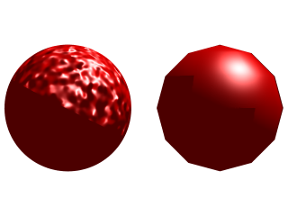
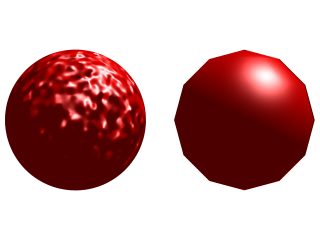
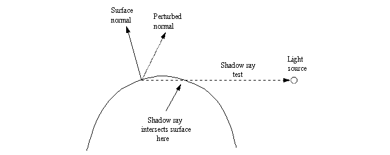
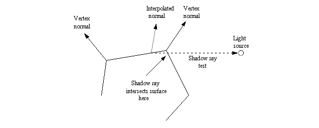
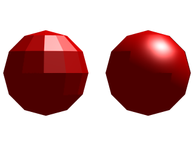

2.4.8 The shadow line artifact

|
|
2.4.7 Miscellaneous questions |
POV-Ray 3.6 for UNIX documentation 2.4.8 The shadow line artifact |
2.4.9 Smooth triangle artifact |
|
People often find an annoying problem when applying normal modifier patterns to objects. It is said that one image tells more than a thousand words, and this saying also applies here. This image shows two cases where the problem appears:

As you notice, there are two clear artifacts in the image. The sphere has a straight shadow line which seems unnatural and the mesh has a non-straight shadow line when it is supposed to have a straight one.
Although the artifacts look quite different in nature, they are, in fact caused by the exact same problem.

What one could expect would be something like this image (do not mind about the bright part under the triangle
mesh; this is explained later).
Let's start with the sphere with the perturbed normal, since it is easier to explain.

This image shows graphically what happens.
The problem happens in the "dark side" of the object, that is, the side which does not "see" the light source.
Although the surface normal points away from the light source (ie. its angle is >90 degrees from the light source), the perturbed normal points towards it (ie. its angle is <90 degrees) and thus, according to the normal vector, the light source should illuminate the point in question.
However, when doing the shadow-ray test, POV-Ray sees that the test ray intersects with a surface (in this case the surface of the same sphere, but at the "other side"). Thus it decides that the surface in question is shadowing the current point and thus the light source does not illuminate it.
This is what causes the straight shadow exactly where the (non-perturbed) surface normal is exactly at 90 degrees
from the light source.
The problem with the mesh of smooth triangles is a bit more difficult, although very similar (and caused by the exact same problem).

This image shows graphically what happens.
Although there is no explicit normal perturbation, the fact that the surface is a mesh of smooth triangles means that there is an implicit normal perturbation.
In order to get a smooth appearance, each vertex has a normal vector and the normal vector at any point in the surface of the triangle is calculated by interpolating the normal vectors of the vertices.
Here the problem happens when the shadow line should pass across a triangle and the unperturbed normal vector of that triangle points away from the light source. As seen in the figure, a triangle that is closer to the light source will shadow the point in the current triangle (it is not necessarily the adjacent triangle, but if the mesh is closed, some triangle will surely shadow the point in question).
This means that this unfortunate triangle will be completely shadowed, thus causing a triangular artifact in the
shadow line of the mesh.

The image on the left shows more clearly why the shadow line of the smooth triangle mesh is like it appeared in the first image of this page.
The object at the left is the same triangle mesh, but with flat triangles, and the object at the right is the same object as in the image at the beginning of this page.
Notice how the shadowed triangles of the flat mesh correspond exactly to the artifacts in the shadow line of the
smooth mesh. The reason for this was explained in the figure above.
And how did I correct the problem in the second image at the beginning of this page?
Firstly, do not think that it is a bug in POV-Ray. It is not a bug, but a real problem caused be the lighting model used in the renderer engine that is quite difficult to surpass. It is not a problem in POV-Ray in particular, but a problem in raytracing in general. Every raytracer will have this same problem when using perturbed surface normals (unless there is some fix coded into it).
Perturbed surface normals are used, in fact, to simulate the perturbation of the surface itself. When calculating the lighting of the object, the surface normal perturbation will give the impression that the surface itself is perturbed (eg. in the images at the beginning of this page the sphere looks like it has a bumpy surface).
In triangle meshes the normal interpolation is used to simulate curvature of the surface (a curvature which actually is not there).
However, since the normal vector perturbation does not affect the surface itself in any way, this kind of artifact will be the price to pay (another one is that although the surface looks bumpy or smooth, its silhouette will still look straight or polygonized, but this usually is not such a big problem).
This is a real problem that happens even to the best. For example, check this IRTC winner image. Notice the straight shadow lines on the rocks (specially in the closest rock)?
However, there are certain things that can be done to alleviate the problem.
1) So what did I do to get the second image at the beginning of this page?
I just made the objects shadowless. This gets rid of the problem of the surface shadowing the wrong point.
This, of course, has severe problems. Since the object does not cast shadows anymore, it probably cannot be used in any real scene (although making the rocks shadowless in the IRTC winning image mentioned above would have perhaps helped the image a lot without making it too unrealistic).
With smooth triangle meshes it also introduces another artifact, which can be seen in the second image at the beginning of the page. I do not know the exact mechanism of this artifact but it is a direct consequence of the mesh being shadowless (it may have something to do with the fact that smooth triangles are double-illuminated in POV-Ray).
2) Perhaps a future version of POV-Ray or one of its patches may introduce a way to stop self-shadowing (while still casting shadows on other objects).
This would alleviate the problem of the completely shadowless object since this object could be used in real scenes and they will cast shadows on other objects and they will not have the shadow line artifact.
However, this solution applies only to a few range of objects (mainly convex objects). Objects where self-shadowing is essential (imagine a coffee cup, for example) will still have problems.
3) I have proposed this sophisticated algorithm to get rid of the problem:
When doing shadow ray tests, do the following:
If we want to be more sure, we could also check if we are hitting the "inside" of the surface at this closest intersection point and only then remove it. This might be necessary for non-closed surfaces.
This algorithm will eliminate the shadowline artifact without eliminating shadowing and self-shadowing of the object.
It has its defects, though:
|
|
2.4.7 Miscellaneous questions | 2.4.8 The shadow line artifact | 2.4.9 Smooth triangle artifact |
|